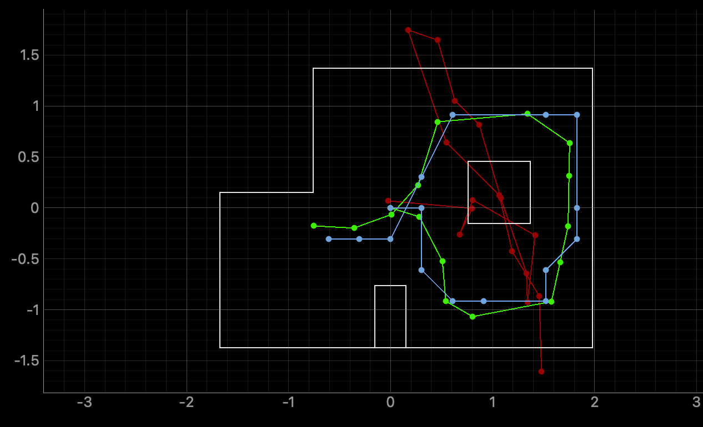
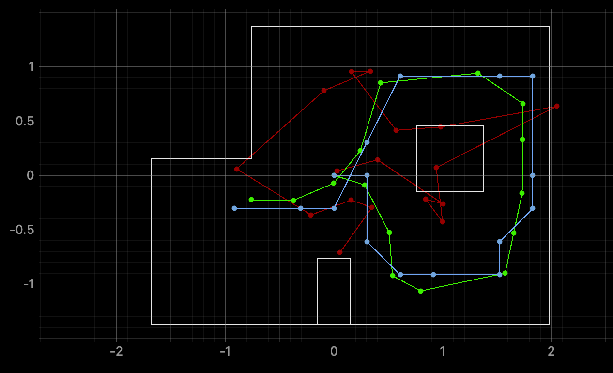
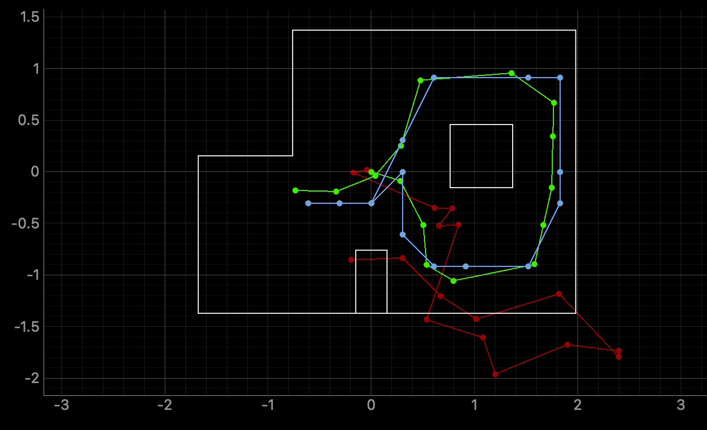

The goal of this lab is to implement grid localization with a Bayes Filter control algorithm in a simulator.
Robot localization is the process of determining where a mobile robot is located
with respect to its environment. Localization can be continuous, but that would require too much
computational power. We discretize the space to simplify computation complexity. We have 3 degrees of
freedom: x, y, and theta.
[-1.6764, +1.9812) meters or [-5.5, 6.5) feet in the x direction,
[-1.3716, +1.3716) meters or [-4.5, +4.5) feet in the y direction,
[-180, +180) degrees along the theta axis.
We discretize them into a grid, with each grid square is 0.3048 m and 20 degrees. This means the number of
cells in each of the x, y, theta axes are (12, 9, 18).
For the robot localization, there are 2 components: predicting position based on control input and the
correcting the prediction based on sensor readings. The result of this is a probability estimate for each
grid to see which position is the most likely.
The first function is to compute the transition from one state to another. This can be defined by 2 rotations and a translation. We use the current and previous position readings to calculate the values using trigonometry.
x_diff = cur_pose[0] - prev_pose[0]
y_diff = cur_pose[1] - prev_pose[1]
angle_rad = np.arctan2(y_diff, x_diff)
angle_deg = np.rad2deg(angle_rad)
delta_rot_1 = mapper.normalize_angle(angle_deg - prev_pose[2])
delta_rot_2 = mapper.normalize_angle(cur_pose[2] - angle_deg)
delta_trans = np.sqrt((y_diff)**2 + (x_diff)**2)
return delta_rot_1, delta_trans, delta_rot_2
The second function is to model the gaussian distribution of the probabilities of each motion from the robot (rot1, translation, rot2).
actual_u = compute_control(cur_pose, prev_pose)
prob_rot1 = loc.gaussian(u[0], actual_u[0], loc.odom_rot_sigma)
prob_trans = loc.gaussian(u[1], actual_u[1], loc.odom_trans_sigma)
prob_rot2 = loc.gaussian(u[2], actual_u[2], loc.odom_rot_sigma)
prob = prob_rot1 * prob_trans * prob_rot2
return prob
The third function is to update the beliefs and complete the prediction step. We loop through all the grids and check for our probability threshold. If the cell has a high enough probability, we update the beliefs.
u = compute_control(cur_odom, prev_odom)
for x1 in range(mapper.MAX_CELLS_X):
for y1 in range(mapper.MAX_CELLS_Y):
for a1 in range(mapper.MAX_CELLS_A):
bel = loc.bel[x1][y1][a1]
if bel >= 0.0001:
for x2 in range(mapper.MAX_CELLS_X):
for y2 in range(mapper.MAX_CELLS_Y):
for a2 in range(mapper.MAX_CELLS_A):
prob = odom_motion_model(mapper.from_map(x2, y2, a2), mapper.from_map(x1, y1, a1), u)
loc.bel_bar[x2][y2][a2] += (prob * bel)
The fourth function is to update the sensor model with the probabilities in a gaussian distribution.
prob_array = np.zeros(mapper.OBS_PER_CELL)
for i in range(mapper.OBS_PER_CELL):
prob_array[i] = loc.gaussian(loc.obs_range_data[i], obs[i], loc.sensor_sigma)
return prob_array
The final function is to update the model with the sensor readings.
for x in range(mapper.MAX_CELLS_X):
for y in range(mapper.MAX_CELLS_Y):
for a in range(mapper.MAX_CELLS_A):
prob_z = np.prod(sensor_model(mapper.get_views(x, y, a)))
loc.bel[x][y][a] = prob_z * loc.bel_bar[x][y][a]
loc.bel = loc.bel / np.sum(loc.bel)
The simulation shows the 3 different plots. The green line represents the ground truth, which is the actual path of the robot. The red line represents the odometry data. The blue line is the bayes filter and the robot's belief of its position. Below are 3 trials of the runs.
  